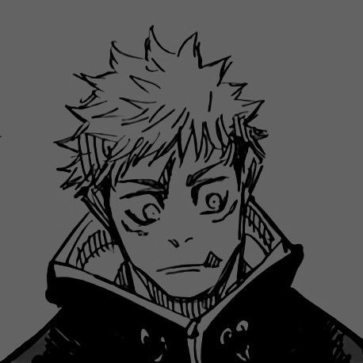

Yuji Itadori é o protagonista da série de anime e mangá "Jujutsu Kaisen". Ele é um estudante do ensino médio que se envolve no mundo do jujutsu após ingerir um dedo amaldiçoado, tornando-se o receptáculo de Sukuna, um poderoso espírito amaldiçoado. Itadori é conhecido por sua força física excepcional, determinação e senso de justiça. Ele se junta à Escola Técnica de Jujutsu de Tóquio para aprender a controlar seus poderes e combater as maldições que ameaçam a humanidade.